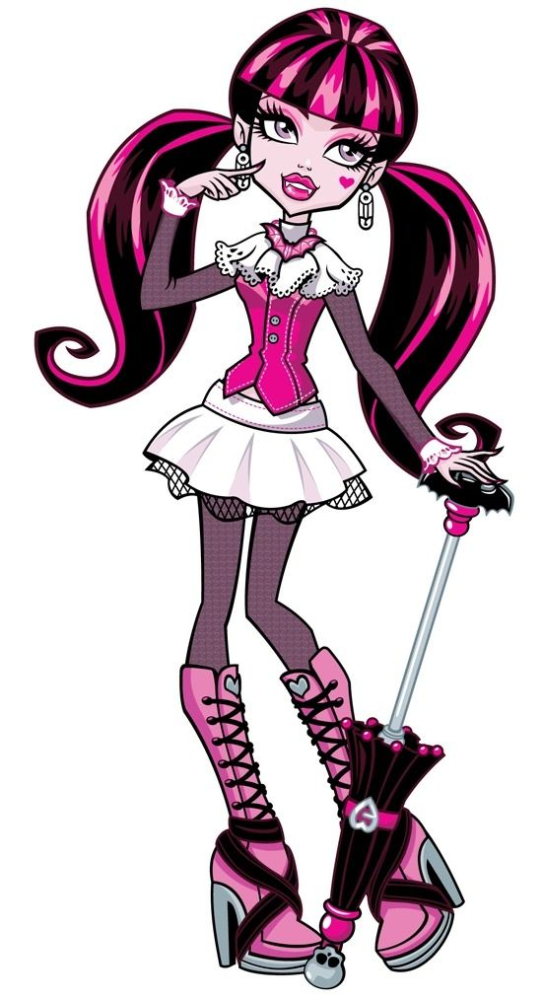

Draclaura

Draculaura is a 2010-introduced and all-around character. She is a Transylvanian vampire, and the adopted daughter of Dracula. She attends Monster High as a student.Having spent much of her childhood at the Vampire Court, Draculaura is used to being pampered. She is prone to crying when she has to deal with obstacles, and acts very ungrateful and easily frustrated. Like not being able to check her appearance in the mirror, though over the past years she has grown to follow that up with action. In particular her mission to find her childhood friend Elissabat and convince her to accept her role as the next Vampire Queen made waves in the monster world and was what earned her full access to her vampire powers. On an average day, Draculaura spends her time on schoolwork, hanging out with her friends and in particular, her BFF Clawdeen, fearleading, dating her boyfriend Clawd, tending to her vegetable garden, shopping, and catching up on the latest gossip. She turned 1,600[3] in "Why Do Ghouls Fall in Love?", which is the vampire equivalent to 16 in normie years.
Count Fabulous

Count Fabulous is Draculaura's pet bat. He is a sophisticated individiual who takes the obligation of decorum bestowed on him by his heritage rather seriously, so it causes him a tiny amount of frustration that his owner does not share this conviction. Nonetheless, he appreciates her and her care for him.